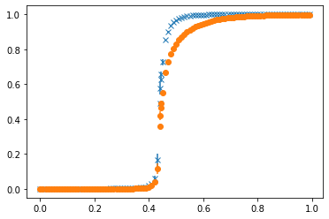
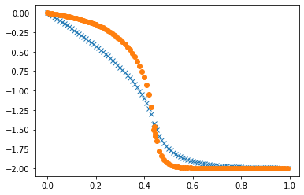
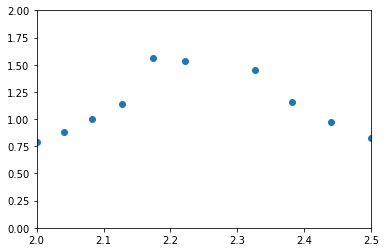
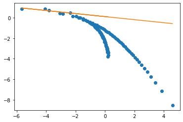
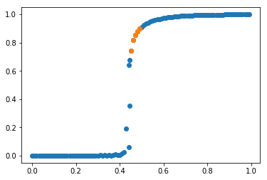
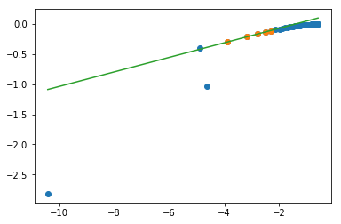
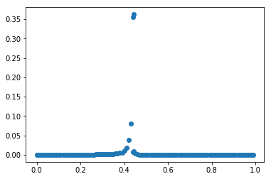
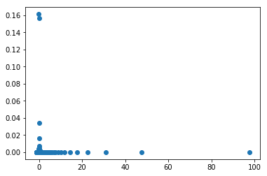
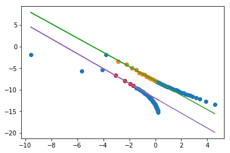
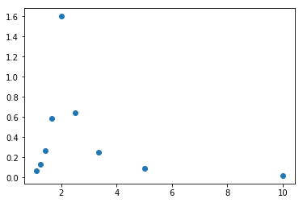

import numpy as np
import math
import itertools
import stats
import pickle
def IntToSpins(i,nx_ny):
(nx,ny)=nx_ny
numSpins=nx*ny
myString=format(i, '#0'+str(numSpins+2)+'b')[2:]
spins=np.reshape(np.array([1 if i=='1' else -1 for i in myString]),(nx,ny))
return spins
def DeltaE(spins,mySpin):
Nx,Ny=np.shape(spins)
(nx,ny)=mySpin
nxp1=(nx+1)%Nx
nxm1=(nx-1)%Nx
nyp1=(ny+1)%Ny
nym1=(ny-1)%Ny
return 2*spins[(nx,ny)]*(spins[(nxp1,ny)]+spins[(nxm1,ny)]+spins[(nx,nyp1)]+spins[(nx,nym1)])
class Observables:
def __init__(self):
self.mag=[]
self.mag2=[]
self.mag2_coarse=[]
self.energy_coarse=[]
self.energy=[]
L=27*3
x,y=np.indices((L,L))
red=np.logical_and((x+y) % 2==0 , np.logical_and(x<L-1,y<L-1))
red[L-1,L-1]=True
blue=np.logical_and((x+y) % 2==1 , np.logical_and(x<L-1,y<L-1))
green=np.logical_and((x+y) % 2==0 , np.logical_or(x==L-1,y==L-1))
green[L-1,L-1]=False
yellow=np.logical_and((x+y) % 2==1 , np.logical_or(x==L-1,y==L-1))
def deltaE_c(spins,color):
rightSpins=np.roll(spins,1,axis=0)
leftSpins=np.roll(spins,-1,axis=0)
upSpins=np.roll(spins,-1,axis=1)
downSpins=np.roll(spins,1,axis=1)
energy=2*(rightSpins[color]+upSpins[color]+downSpins[color]+leftSpins[color])*spins[color]
return energy
def Energy(spins):
rightSpins=np.roll(spins,1,axis=0)
downSpins=np.roll(spins,1,axis=1)
return np.sum(spins*rightSpins*-1)+np.sum(spins*downSpins*-1)
def RunIsing(params):
(Nx,Ny)=params["Nx"],params["Ny"]
N=Nx*Ny
#spins=IntToSpins(0,(Nx,Ny))
spins=np.zeros((Nx,Ny))
o=Observables()
beta=params["beta"]
s=params["NumSweeps"]
for sweep in range(0,s):
for step in range(0,N):
flip_x=np.random.randint(Nx)
flip_y=np.random.randint(Ny)
if (np.exp(-beta*DeltaE(spins,(flip_x,flip_y)))>np.random.random()):
spins[flip_x,flip_y]*=-1
if sweep>10:
o.mag2.append(np.sum(spins)**2)
o.mag.append(np.sum(spins))
o.energy.append(Energy(spins))
return o
def CoarseGrain(spins,Nx,Ny):
return np.reshape(np.array([(1 if np.sum(spins[3*i:3*(i+1),3*j:3*(j+1)]) > 0 else -1) for (i,j) in itertools.product(range(0,Nx//3),range(0,Ny//3))]),(Nx//3,Ny//3))
def RunIsingFast(params):
(Nx,Ny)=params["Nx"],params["Ny"]
N=Nx*Ny
spins=IntToSpins(0,(Nx,Ny))
o=Observables()
beta=params["beta"]
for sweep in range(0,params["NumSweeps"]):
for color in [red,green,yellow,blue]:
dE=np.exp(-beta*deltaE_c(spins,color))
dE=1.0/(1.0+1.0/dE)
toFlip=dE<np.random.random(np.shape(dE))
spins[color] = (toFlip*2-1)*spins[color]
if sweep>10:
o.mag2.append(np.sum(spins)**2)
o.energy.append(Energy(spins))
o.mag.append(np.sum(spins))
coarse_lattice=CoarseGrain(spins,Nx,Ny)
o.mag2_coarse.append(np.sum(coarse_lattice)**2)
o.energy_coarse.append(Energy(coarse_lattice))
return o
params=dict()
params["NumSweeps"]=1000
params["beta"]=0.5
params["Nx"]=27*3
params["Ny"]=27*3
#%time o=RunIsing(params)
#print(np.average(o.mag2)/((params["Nx"]*params["Ny"])**2))
%time o=RunIsingFast(params)
print(np.average(o.mag2)/((params["Nx"]*params["Ny"])**2))
CPU times: user 5.57 s, sys: 100 ms, total: 5.67 s
Wall time: 5.94 s
0.8337404291734919
import pickle
f=open('data.pickle', 'wb')
pickle.dump(data, f)
params=dict()
#data=dict()
params["NumSweeps"]=1000000
params["Nx"]=27*3
params["Ny"]=27*3
#myData=[]
#myO=[]
Nxy=params["Nx"]*params["Ny"]
#for beta in np.arange(0,1,0.01):
for beta in np.arange(0.4407,0.4415,0.0001):
params["beta"]=beta
o=RunIsingFast(params)
data[beta]=dict()
o.mag2=np.array(o.mag2)
o.mag=np.array(o.mag)
o.energy=np.array(o.energy)
o.mag2_coarse=np.array(o.mag2_coarse)
o.energy_coarse=np.array(o.energy_coarse)
data[beta]['M2']=stats.Stats(o.mag2/Nxy**2)
data[beta]['M']=stats.Stats(o.mag/Nxy)
data[beta]['E']=stats.Stats(o.energy/Nxy)
data[beta]['M2_coarse']=stats.Stats(o.mag2_coarse/((Nxy//9)**2))
data[beta]['E_coarse']=stats.Stats(o.energy_coarse/(Nxy//9))
# myData.append(np.average(o.mag2)/((params["Nx"]*params["Ny"])**2))
# myO.append(np.average(o.mag)/(params["Nx"]*params["Ny"]))
print(beta,np.average(o.mag2)/((params["Nx"]*params["Ny"])**2))
0.4407 0.35929120025289746
---------------------------------------------------------------------------
KeyboardInterrupt Traceback (most recent call last)
/var/folders/5z/1xxxzf610_7gxv7scl0v99240000gn/T/ipykernel_1995/114012659.py in <module>
11 for beta in np.arange(0.4407,0.4415,0.0001):
12 params["beta"]=beta
---> 13 o=RunIsingFast(params)
14 data[beta]=dict()
15 o.mag2=np.array(o.mag2)
/var/folders/5z/1xxxzf610_7gxv7scl0v99240000gn/T/ipykernel_1995/1034043408.py in RunIsingFast(params)
87 o.energy.append(Energy(spins))
88 o.mag.append(np.sum(spins))
---> 89 coarse_lattice=CoarseGrain(spins,Nx,Ny)
90 o.mag2_coarse.append(np.sum(coarse_lattice)**2)
91 o.energy_coarse.append(Energy(coarse_lattice))
/var/folders/5z/1xxxzf610_7gxv7scl0v99240000gn/T/ipykernel_1995/1034043408.py in CoarseGrain(spins, Nx, Ny)
69
70 def CoarseGrain(spins,Nx,Ny):
---> 71 return np.reshape(np.array([(1 if np.sum(spins[3*i:3*(i+1),3*j:3*(j+1)]) > 0 else -1) for (i,j) in itertools.product(range(0,Nx//3),range(0,Ny//3))]),(Nx//3,Ny//3))
72
73 def RunIsingFast(params):
/var/folders/5z/1xxxzf610_7gxv7scl0v99240000gn/T/ipykernel_1995/1034043408.py in <listcomp>(.0)
69
70 def CoarseGrain(spins,Nx,Ny):
---> 71 return np.reshape(np.array([(1 if np.sum(spins[3*i:3*(i+1),3*j:3*(j+1)]) > 0 else -1) for (i,j) in itertools.product(range(0,Nx//3),range(0,Ny//3))]),(Nx//3,Ny//3))
72
73 def RunIsingFast(params):
KeyboardInterrupt:
print(data[0])
{'M2': (0.00015479338792287608, 4.653394910007596e-08, 2.1656939176500475e-06, 1.006807069331522), 'M': (0.0002120759904939787, 0.00015474841169713208, 0.0001269088240153438, 1.0396315543367485), 'E': (0.00015102727922220311, 0.0003131197629217867, 0.00017704930780806097, 1.0), 'M2_coarse': (0.0013852960600250627, 3.671890285648449e-06, 1.9197867704223576e-05, 1.0026244844269026), 'E_coarse': (-0.0008830014799544245, 0.0027155412560604174, 0.0005213954009065836, 1.0)}
Specifc Heat#
def GetMe(s,data):
x=[]
y=[]
error=[]
keys=list(data.keys())
keys.sort()
for key in keys:
x.append(key)
y.append(data[key][s][0])
error.append(data[key][s][2])
return (np.array(x),np.array(y),np.array(error))
x,y,e=GetMe('M2_coarse',data)
plt.errorbar(x,y,e,fmt='x')
x,y,e=GetMe('M2',data)
plt.errorbar(x,y,e,fmt='o')
plt.show()
x,y,e=GetMe('E',data)
plt.errorbar(x,y,e,fmt='x')
x,y,e=GetMe('E_coarse',data)
plt.errorbar(x,y,e,fmt='o')
plt.show()
betas,E,e=GetMe('E',data)
print(betas[1:]-betas[:-1])
dEdb=(E[1:]-E[:-1])/(betas[1:]-betas[:-1])
s=-dEdb[0:]*betas[1:]**2
t=1/betas[1:]
plt.plot(t,s,'o')
plt.xlim(2,2.5)
plt.ylim(0,2)
plt.show()
tc=1./0.44068679350977147
xx=np.log(np.abs(t-tc)[s>0])
yy=np.log(s[s>0])
plt.plot(xx,yy,'o')
line=np.polyfit(xx[xx<-3],yy[xx<-3],1)
print(line)
plt.plot(xx,xx*line[0]+line[1])




[0.01 0.01 0.01 0.01 0.01 0.01 0.01 0.01 0.01 0.01
0.01 0.01 0.01 0.01 0.01 0.01 0.01 0.01 0.01 0.01
0.01 0.01 0.01 0.01 0.01 0.01 0.01 0.01 0.01 0.01
0.01 0.01 0.01 0.01 0.01 0.01 0.01 0.01 0.01 0.01
0.01 0.01 0.01 0.01 0.0007 0.0033 0.001 0.005 0.01 0.01
0.01 0.01 0.01 0.01 0.01 0.01 0.01 0.01 0.01 0.01
0.01 0.01 0.01 0.01 0.01 0.01 0.01 0.01 0.01 0.01
0.01 0.01 0.01 0.01 0.01 0.01 0.01 0.01 0.01 0.01
0.01 0.01 0.01 0.01 0.01 0.01 0.01 0.01 0.01 0.01
0.01 0.01 0.01 0.01 0.01 0.01 0.01 0.01 0.01 0.01
0.01 0.01 ]
[-0.14820095 0.10050528]
[<matplotlib.lines.Line2D at 0x7fba05671310>]
Magnetization )beta)#
x,y,e=GetMe('M',data)
y=np.abs(y)
plt.plot(x,y,'o')
#cut=np.logical_and(np.logical_and(x>0.440,x<0.5),y>0.4)
cut=np.logical_and(x>0.445, x<0.5)
plt.plot(x[cut],y[cut],'o')
#plt.xlim(0.4,0.5)
plt.show()
xx=np.log(1-(0.44068679350977147/x))
yy=np.log(y)
plt.plot(xx,yy,'o')
plt.plot(xx[cut],yy[cut],'o')
line=np.polyfit(xx[cut],yy[cut],1)
plt.plot(xx,line[0]*xx+line[1])
print(line[0])
plt.show()


0.1209622490326108
/anaconda3/lib/python3.7/site-packages/ipykernel_launcher.py:11: RuntimeWarning: divide by zero encountered in true_divide
# This is added back by InteractiveShellApp.init_path()
/anaconda3/lib/python3.7/site-packages/ipykernel_launcher.py:11: RuntimeWarning: invalid value encountered in log
# This is added back by InteractiveShellApp.init_path()
Suceptibility#
betas,M,e=GetMe('M',data)
betas,M2,e=GetMe('M2',data)
plt.plot(betas,M2-M**2,'o')
plt.show()
t=1/betas
plt.plot((t-tc),(1/t)*(M2-M**2),'o')
#plt.xlim(2,2.4)
plt.show()
xx=np.log(np.abs(tc-t))
yy=np.log((1/t)*(M2-M**2))
plt.plot(xx,yy,'o')
#plt.xlim(2,2.4)
#cut=np.logical_and(-4.5<yy,np.logical_and(xx<-1,xx>-5))
##cut=np.logical_and(tc-t>0,np.logical_and(xx>-3.5,xx<-1.5))
cut=np.logical_and(tc-t<0,np.logical_and(-3.5<xx,xx<0))
plt.plot(xx[cut],yy[cut],'o')
line=np.polyfit(xx[cut],yy[cut],1)
plt.plot(xx,line[0]*xx+line[1])
print(line)
cut=np.logical_and(tc-t>0,np.logical_and(xx>-3.5,xx<-1.5))
plt.plot(xx[cut],yy[cut],'o')
line=np.polyfit(xx[cut],yy[cut],1)
plt.plot(xx,line[0]*xx+line[1])
print(line)
print(7/4.)
plt.show()
#plt.plot(x,y,'o')
#cut=np.logical_and(np.logical_and(x>0.440,x<0.5),y>0.4)
#cut=np.logical_and(x>0.445, x<0.5)
#plt.plot(x[cut],y[cut],'o')
#plt.xlim(0.4,0.5)
#plt.show()



/anaconda3/lib/python3.7/site-packages/ipykernel_launcher.py:5: RuntimeWarning: divide by zero encountered in true_divide
"""
[-1.65420873 -7.94776262]
[ -1.71979981 -11.9582317 ]
1.75
/anaconda3/lib/python3.7/site-packages/ipykernel_launcher.py:10: RuntimeWarning: divide by zero encountered in log
# Remove the CWD from sys.path while we load stuff.
x=[]
y=[]
error=[]
keys=list(data.keys())
keys.sort()
for key in keys:
print(key)
x.append(key)
y.append(data[key]['M2_coarse'][0])
error.append(data[key]['M2_coarse'][2])
plt.errorbar(x,y,error,fmt='x')
x=[]
y=[]
error=[]
keys=list(data.keys())
keys.sort()
for key in keys:
x.append(key)
y.append(data[key]['M2'][0])
error.append(data[key]['M2'][2])
plt.errorbar(x,y,error,fmt='o')
plt.show()
0.0
0.01
0.02
0.03
0.04
0.05
0.06
0.07
0.08
0.09
0.1
0.11
0.12
0.13
0.14
0.15
0.16
0.17
0.18
0.19
0.2
0.21
0.22
0.23
0.24
0.25
0.26
0.27
0.28
0.29
0.30000000000000004
0.31
0.32
0.33
0.34
0.35000000000000003
0.36
0.37
0.38
0.39
0.4
0.41000000000000003
0.42
0.43
0.44
0.444
0.445
0.45
0.46
0.47000000000000003
0.48
0.49
0.5
0.51
0.52
0.53
0.54
0.55
0.56
0.5700000000000001
0.58
0.59
0.6000000000000001
0.61
0.62
0.63
0.64
0.65
0.66
0.67
0.68
0.6900000000000001
0.7000000000000001
0.71
0.72
0.73
0.74
0.75
0.76
0.77
0.78
0.79
0.8
0.81
0.8200000000000001
0.8300000000000001
0.84
0.85
0.86
0.87
0.88
0.89
0.9
0.91
0.92
0.93
0.9400000000000001
0.9500000000000001
0.96
0.97
0.98
0.99
x=[]
y=[]
error=[]
keys=list(data.keys())
keys.sort()
for key in keys:
print(key)
x.append(key)
y.append(data[key]['E_coarse'][0])
error.append(data[key]['E_coarse'][2])
plt.errorbar(x,y,error,fmt='x')
x=[]
y=[]
error=[]
keys=list(data.keys())
keys.sort()
for key in keys:
x.append(key)
y.append(data[key]['E'][0])
error.append(data[key]['E'][2])
plt.errorbar(x,y,error,fmt='o')
plt.show()
0.0
0.1
0.2
0.30000000000000004
0.4
0.5
0.6000000000000001
0.7000000000000001
0.8
0.9
import pylab as plt
betas=np.arange(0,1,0.1)
#plt.plot(betas,myData2,'o')
#plt.plot(betas,myData,'o')
plt.plot(betas[1:],myData2[1:]-myData[1:],'o')
[<matplotlib.lines.Line2D at 0x112999fd0>]
myO
[-0.00010011012113324657,
-3.4834843247554024e-05,
3.6116545758633535e-05,
4.4569678986467494e-05,
-4.4539162260013214e-05,
4.7316184367352174e-05,
3.7947549345889986e-05,
-2.8121163427613694e-05,
6.068251055432428e-05,
-2.5832408943543124e-05,
-3.4041408359742886e-05,
-4.832323634034322e-05,
5.264135313362302e-06,
4.371521064574782e-05,
-5.442658163119806e-05,
-0.00010059838875651495,
-0.00014042271677934282,
0.0001468312293347404,
0.00016678916843583576,
5.3053328940755726e-05,
0.00014225372036659928,
0.0003926739776503735,
-0.00022031550663663272,
0.0001083496372759006,
0.00027048500492745953,
-0.00040420930025008916,
1.8233744056428845e-05,
0.00011375109785830715,
0.00023691660582775788,
-0.00044855010378814955,
-1.7745476433160458e-05,
-0.0013104950424891247,
7.630707449891268e-05,
3.2393505131212086e-05,
0.0016419982419619058,
0.000710353100039368,
-0.0009874144595177238,
-0.005454910628791197,
-0.005490462615110427,
-0.0038060308650138533,
-0.011316746546486916,
0.013514408602091474,
0.01491646908230665,
-0.07748558469948708,
-0.641260652683506,
-0.7426643168176963,
-0.8157960954123152,
-0.8539490833606954,
-0.8776127601053125,
-0.8967000264839411,
-0.9108688815432077,
-0.9233654199927801,
-0.9326862658206148,
-0.9411778501237811,
-0.9479460023004423,
-0.9540671083260935,
-0.9590774970589886,
-0.9634104754980516,
-0.9672436509912467,
-0.9705608801902791,
-0.973783141336586,
-0.9762256390885331,
-0.978570849516544,
-0.980610404412389,
-0.9825339957477078,
-0.9841628870556576,
-0.9855746823716117,
-0.9869090872692776,
-0.9880756196547188,
-0.9891665010752797,
-0.990168792438944,
-0.9910187137874219,
-0.9918200525073847,
-0.992576287505648,
-0.9931987676918623,
-0.9937644867668717,
-0.9943426261495479,
-0.9947865224525518,
-0.9952694496486906,
-0.9956856062473476,
-0.9960127760716638,
-0.9963687842024794]
myO=-np.array(myO)
backup=np.copy(myO)
for i in range(0,len(myO)):
myO[i]=np.abs(myO[i])
beta=np.arange(0,0.82,0.01)
plt.plot(beta[1:],myO[1:],'o-')
plt.xlim(0.4,0.5)
(0.4, 0.5)

print(len(x))
print(len(y))
207
207
import pylab as plt
betas=np.arange(0,0.82,0.01)
line=np.polyfit(np.log(1-(0.4406/betas))[45:47],np.log(myData)[45:47],1)
print(line)
plt.plot(np.log(1-(0.4406/betas)),np.log(myData),'o')
#plt.plot((1-(0.44/betas)),(myData),'o')
plt.plot(np.log((1-(0.4406/betas))),line[0]*np.log(1-(0.4406/betas))+line[1])
plt.show()
/anaconda3/lib/python3.7/site-packages/ipykernel_launcher.py:3: RuntimeWarning: divide by zero encountered in true_divide
This is separate from the ipykernel package so we can avoid doing imports until
/anaconda3/lib/python3.7/site-packages/ipykernel_launcher.py:3: RuntimeWarning: invalid value encountered in log
This is separate from the ipykernel package so we can avoid doing imports until
---------------------------------------------------------------------------
TypeError Traceback (most recent call last)
/var/folders/5z/1xxxzf610_7gxv7scl0v99240000gn/T/ipykernel_1995/1959559010.py in <module>
1 import pylab as plt
2 betas=np.arange(0,0.82,0.01)
----> 3 line=np.polyfit(np.log(1-(0.4406/betas))[45:47],np.log(myData)[45:47],1)
4 print(line)
5 plt.plot(np.log(1-(0.4406/betas)),np.log(myData),'o')
<__array_function__ internals> in polyfit(*args, **kwargs)
/anaconda3/lib/python3.7/site-packages/numpy/lib/polynomial.py in polyfit(x, y, deg, rcond, full, w, cov)
603 raise TypeError("expected 1D or 2D array for y")
604 if x.shape[0] != y.shape[0]:
--> 605 raise TypeError("expected x and y to have same length")
606
607 # set rcond
TypeError: expected x and y to have same length
1/2.2222
0.4500045000450005
np.log(1+np.sqrt(2))/2.
0.44068679350977147
0.259/2.
0.1295
0.2206/2.
0.1103
1/8.
0.125
1/(1+0.01831563888873418)
0.9820137900379085
print(data.keys())
dict_keys([0.0, 0.01, 0.02, 0.03, 0.04, 0.05, 0.06, 0.07, 0.08, 0.09, 0.1, 0.11, 0.12, 0.13, 0.14, 0.15, 0.16, 0.17, 0.18, 0.19, 0.2, 0.21, 0.22, 0.23, 0.24, 0.25, 0.26, 0.27, 0.28, 0.29, 0.3, 0.31, 0.32, 0.33, 0.34, 0.35000000000000003, 0.36, 0.37, 0.38, 0.39, 0.4, 0.41000000000000003, 0.42, 0.43, 0.44, 0.45, 0.46, 0.47000000000000003, 0.48, 0.49, 0.5, 0.51, 0.52, 0.53, 0.54, 0.55, 0.56, 0.5700000000000001, 0.58, 0.59, 0.6, 0.61, 0.62, 0.63, 0.64, 0.65, 0.66, 0.67, 0.68, 0.6900000000000001, 0.7000000000000001, 0.71, 0.72, 0.73, 0.74, 0.75, 0.76, 0.77, 0.78, 0.79, 0.8, 0.81, 0.8200000000000001, 0.8300000000000001, 0.84, 0.85, 0.86, 0.87, 0.88, 0.89, 0.9, 0.91, 0.92, 0.93, 0.9400000000000001, 0.9500000000000001, 0.96, 0.97, 0.98, 0.99, 0.401, 0.402, 0.403, 0.404, 0.405, 0.406, 0.40700000000000003, 0.40800000000000003, 0.40900000000000003, 0.41100000000000003, 0.41200000000000003, 0.41300000000000003, 0.41400000000000003, 0.41500000000000004, 0.41600000000000004, 0.41700000000000004, 0.41800000000000004, 0.41900000000000004, 0.42000000000000004, 0.42100000000000004, 0.42200000000000004, 0.42300000000000004, 0.42400000000000004, 0.42500000000000004, 0.42600000000000005, 0.42700000000000005, 0.42800000000000005, 0.42900000000000005, 0.43000000000000005, 0.43100000000000005, 0.43200000000000005, 0.43300000000000005, 0.43400000000000005, 0.43500000000000005, 0.43600000000000005, 0.43700000000000006, 0.43800000000000006, 0.43900000000000006, 0.44000000000000006, 0.44100000000000006, 0.44200000000000006, 0.44300000000000006, 0.44400000000000006, 0.44500000000000006, 0.44600000000000006, 0.44700000000000006, 0.44800000000000006, 0.44900000000000007, 0.45000000000000007, 0.45100000000000007, 0.45200000000000007, 0.45300000000000007, 0.45400000000000007, 0.45500000000000007, 0.45600000000000007, 0.4570000000000001, 0.4580000000000001, 0.4590000000000001, 0.4600000000000001, 0.4610000000000001, 0.4620000000000001, 0.4630000000000001, 0.4640000000000001, 0.4650000000000001, 0.4660000000000001, 0.4670000000000001, 0.4680000000000001, 0.4690000000000001, 0.4700000000000001, 0.4710000000000001, 0.4720000000000001, 0.4730000000000001, 0.4740000000000001, 0.4750000000000001, 0.4760000000000001, 0.4770000000000001, 0.4780000000000001, 0.4790000000000001, 0.4800000000000001, 0.4810000000000001, 0.4820000000000001, 0.4830000000000001, 0.4840000000000001, 0.4850000000000001, 0.4860000000000001, 0.4870000000000001, 0.4880000000000001, 0.4890000000000001, 0.4900000000000001, 0.4910000000000001, 0.4920000000000001, 0.4930000000000001, 0.4940000000000001, 0.4950000000000001, 0.4960000000000001, 0.4970000000000001, 0.4980000000000001, 0.4990000000000001, 0.441, 0.442, 0.443, 0.444, 0.445, 0.446, 0.447, 0.448, 0.449])
print(x)
[0. 0.01 0.02 0.03 0.04 0.05 0.06 0.07 0.08 0.09 0.1 0.11
0.12 0.13 0.14 0.15 0.16 0.17 0.18 0.19 0.2 0.21 0.22 0.23
0.24 0.25 0.26 0.27 0.28 0.29 0.3 0.31 0.32 0.33 0.34 0.35
0.36 0.37 0.38 0.39 0.4 0.401 0.402 0.403 0.404 0.405 0.406 0.407
0.408 0.409 0.41 0.411 0.412 0.413 0.414 0.415 0.416 0.417 0.418 0.419
0.42 0.42 0.421 0.422 0.423 0.424 0.425 0.426 0.427 0.428 0.429 0.43
0.43 0.431 0.432 0.433 0.434 0.435 0.436 0.437 0.438 0.439 0.44 0.44
0.441 0.441 0.442 0.442 0.443 0.443 0.444 0.444 0.445 0.445 0.446 0.446
0.447 0.447 0.448 0.448 0.449 0.449 0.45 0.45 0.451 0.452 0.453 0.454
0.455 0.456 0.457 0.458 0.459 0.46 0.46 0.461 0.462 0.463 0.464 0.465
0.466 0.467 0.468 0.469 0.47 0.47 0.471 0.472 0.473 0.474 0.475 0.476
0.477 0.478 0.479 0.48 0.48 0.481 0.482 0.483 0.484 0.485 0.486 0.487
0.488 0.489 0.49 0.49 0.491 0.492 0.493 0.494 0.495 0.496 0.497 0.498
0.499 0.5 0.51 0.52 0.53 0.54 0.55 0.56 0.57 0.58 0.59 0.6
0.61 0.62 0.63 0.64 0.65 0.66 0.67 0.68 0.69 0.7 0.71 0.72
0.73 0.74 0.75 0.76 0.77 0.78 0.79 0.8 0.81 0.82 0.83 0.84
0.85 0.86 0.87 0.88 0.89 0.9 0.91 0.92 0.93 0.94 0.95 0.96
0.97 0.98 0.99 ]
x=[]
y=[]
keys=list(data.keys())
keys.sort()
for key in keys:
x.append(key)
y.append(np.abs(data[key]['E'][0]))
x=np.array(x)
y=np.array(y)
y=(y[1:]-y[:-1])/(x[1:]-x[:-1])
y=y*x[1:]**2
plt.plot(1./x[1:],y,'o')
#cut=np.logical_and(np.logical_and(x>0.4450,x<0.5),y>0.4)
#plt.plot(x[cut],y[cut],'o')
#plt.xlim(0.4,0.5)
plt.show()

f.close()
f=open('data.pickle','rb')
data3=pickle.load(f)
print(data3)
{0.0: {'M2': (0.00015405490267785275, 4.784584548906587e-08, 2.1885733681174556e-06, 1.0), 'M': (0.00028989364295237797, 0.00015397086435362854, 0.00012415329992163893, 1.0), 'E': (-0.00011507857545906805, 0.0003057317880739819, 0.00017494812470664095, 1.0), 'M2_coarse': (0.0013904710940321726, 3.9902355252021575e-06, 2.073886356502502e-05, 1.076696723155936), 'E_coarse': (0.0003238129844063035, 0.0027524383168772443, 0.000534477102796102, 1.0367227462023691)}, 0.1: {'M2': (0.00023635134637809148, 1.110810645739396e-07, 3.5341973216265082e-06, 1.1232167381784457), 'M': (0.00015928205372808428, 0.00023632597560545163, 0.0001932348415465875, 1.5782704468940343), 'E': (-0.20351943608019119, 0.0003264816398191525, 0.00018303342897798273, 1.0250005109702138), 'M2_coarse': (0.0015159664222040088, 4.503955296890618e-06, 2.1785883283670034e-05, 1.0526361653622618), 'E_coarse': (-0.05554779667785456, 0.002764344278139279, 0.0005395422286631628, 1.0519152857052334)}, 0.2: {'M2': (0.00042614584975356456, 3.5367680724355055e-07, 8.153062242176285e-06, 1.8774005786802732), 'M': (-0.0009557686141846414, 0.0004252323561097041, 0.0003898148640133617, 3.569542035873912), 'E': (-0.428001391379626, 0.0003732884003338488, 0.00021233484346867514, 1.2064797892530985), 'M2_coarse': (0.001853142342049901, 6.918365400541031e-06, 3.238122321981198e-05, 1.5139272914819588), 'E_coarse': (-0.1500907514040479, 0.0027889882492847518, 0.0006067462720946987, 1.3185286228887871)}, 0.30000000000000004: {'M2': (0.0011093296142728945, 2.5840128568769135e-06, 3.728943039298566e-05, 5.375252153083802), 'M': (-0.0010868989877586574, 0.0011081482648633038, 0.001168421596140549, 12.306180857187814), 'E': (-0.7042287897574392, 0.00047896015921727875, 0.0003120791575559369, 2.031197500835362), 'M2_coarse': (0.0029566030586550608, 1.866124139291867e-05, 9.08781892975111e-05, 4.42079944547836), 'E_coarse': (-0.3412068776339845, 0.003203504431467996, 0.0009052679401431815, 2.55535336352932)}, 0.4: {'M2': (0.011086877785843179, 0.00047919161267652796, 0.0018206380223915574, 69.097132042741), 'M': (0.005214957608681239, 0.011059682002982837, 0.012951547953313968, 151.5035219710427), 'E': (-1.1048322336096914, 0.0008847679997512348, 0.0012430107476940084, 17.443851224569478), 'M2_coarse': (0.018031614258260702, 0.0012625575680126758, 0.002945109371616502, 68.62362868957511), 'E_coarse': (-0.8301738222057982, 0.005949652969390429, 0.004198152005156292, 29.590117979464747)}, 0.5: {'M2': (0.831515285702294, 0.0003812089387583706, 0.0006857238339679785, 12.321325389364604), 'M': (-0.9118114516732009, 0.00011516229990415905, 0.0003776481485120342, 12.370475776937871), 'E': (-1.7462172266951352, 0.0004374732733776199, 0.00047175029949302495, 5.0815342426711165), 'M2_coarse': (0.9676604424131637, 0.0002929852245107112, 0.000663851225730559, 15.025115424992281), 'E_coarse': (-1.9419872147428017, 0.0007725004619656417, 0.0009401833479857105, 11.430056447892179)}, 0.6000000000000001: {'M2': (0.9479753728193954, 5.7893652074203494e-05, 0.00012476219128518327, 2.685697248731198), 'M': (-0.9736324192246283, 1.5285054193014957e-05, 6.413568203123465e-05, 2.6881559812910254), 'E': (-1.9091038551185453, 0.00013541436524544537, 0.00016385649927834475, 1.980544564792023), 'M2_coarse': (0.9981273052899109, 1.129158760737603e-05, 6.14848143033914e-05, 3.344280804965686), 'E_coarse': (-1.9963323167143667, 4.180371868267585e-05, 0.00011354420327142893, 3.080612200936629)}, 0.7000000000000001: {'M2': (0.9803333335039337, 1.7116479508749727e-05, 5.160252790315001e-05, 1.5539946644174565), 'M': (-0.9901156323014606, 4.368176212299346e-06, 2.607122726185312e-05, 1.554335672740099), 'E': (-1.9636299212779844, 5.1046630788587066e-05, 8.523800978268062e-05, 1.4217444186722115), 'M2_coarse': (0.9998502570605369, 8.399423904181802e-07, 1.2396548989653779e-05, 1.8275703992856294), 'E_coarse': (-1.9997006309134835, 3.349349497305809e-06, 2.4676826604926386e-05, 1.8161016980475657)}, 0.8: {'M2': (0.992072811487327, 5.760894373207925e-06, 2.7258462592875124e-05, 1.288352829758027), 'M': (-0.9960277903010795, 1.4524352759393011e-06, 1.3687063589786444e-05, 1.288385400231743), 'E': (-1.9848812813131176, 1.9260462341019746e-05, 4.882874974492666e-05, 1.2365352856035137), 'M2_coarse': (0.9999901261436185, 5.4005727667671977e-08, 2.7883695740436e-06, 1.4380793874075537), 'E_coarse': (-1.9999802251612575, 2.1661678850648514e-07, 5.58439951031886e-06, 1.4380793859953735)}, 0.9: {'M2': (0.9966587471464476, 2.326198256574763e-06, 1.6727791766215245e-05, 1.2015795113969208), 'M': (-0.9983276833903056, 5.837229932748045e-07, 8.379606363386133e-06, 1.2016069956181226), 'E': (-1.9935106181194986, 8.360067397017446e-06, 3.14178192228315e-05, 1.1794086465966713), 'M2_coarse': (0.9999972572621162, 1.502114987950165e-08, 1.4505625786261474e-06, 1.3992385845272635), 'E_coarse': (-1.9999945069892382, 6.024977983187796e-08, 2.9051102082919694e-06, 1.3992385887536751)}, 0.01: {'M2': (0.000162367805942896, 5.414798770674957e-08, 2.3282529090380724e-06, 1.0), 'M': (3.886305113951827e-05, 0.00016236629560615213, 0.0001304436932054615, 1.0468207038179023), 'E': (-0.02016584955842831, 0.0003033602044420931, 0.00017426826106237587, 1.0), 'M2_coarse': (0.0014383017301275905, 4.1403718523654474e-06, 2.0671882809985324e-05, 1.030962180976806), 'E_coarse': (-0.004707235572298252, 0.0027231515105742136, 0.0005221254902681614, 1.0)}, 0.02: {'M2': (0.00016499374211433886, 5.604994656872392e-08, 2.384783279469483e-06, 1.0135487591683388), 'M': (-0.00010242939234377146, 0.00016498325033392295, 0.00013643601732116442, 1.1270423221340253), 'E': (-0.03985652316923711, 0.0003084630552594688, 0.00017572784021650283, 1.0), 'M2_coarse': (0.001376552452771349, 3.7385730121907434e-06, 1.9377538997642906e-05, 1.0032597423208205), 'E_coarse': (-0.009772890096801956, 0.0027189292471253984, 0.0005295996414923429, 1.0304323189238216)}, 0.03: {'M2': (0.00017125130361953875, 5.750823961917981e-08, 2.399407600728951e-06, 1.0), 'M': (-4.545466405364147e-05, 0.00017124923749305452, 0.00014001297365929058, 1.1434835613582917), 'E': (-0.060089845209855816, 0.0003090200519786663, 0.00017588642595773682, 1.0), 'M2_coarse': (0.0014320778249297557, 4.129970620589338e-06, 2.0333515660208594e-05, 1.0), 'E_coarse': (-0.0142255246202922, 0.0027022639436586537, 0.0005201191889689059, 1.0)}, 0.04: {'M2': (0.00017945802858378973, 6.43695123527462e-08, 2.543540392444613e-06, 1.003966153274857), 'M': (9.414410111143635e-06, 0.00017945793995267198, 0.0001471671970683306, 1.2055392977525645), 'E': (-0.0801872457508472, 0.0003106730437824022, 0.00018377883541287974, 1.085949003125101), 'M2_coarse': (0.001416881248654946, 4.077326475806467e-06, 2.020350581935667e-05, 1.0), 'E_coarse': (-0.019659760166910626, 0.002705340804109755, 0.0005350595692459481, 1.0570713478698257)}, 0.05: {'M2': (0.00018737088877477726, 7.001071243802299e-08, 2.7354673832902217e-06, 1.0676295790699106), 'M': (-4.438657862774186e-05, 0.00018736891860641504, 0.0001536893795366359, 1.2592506318509389), 'E': (-0.10046670908186477, 0.00031528748405999785, 0.0001829808391377693, 1.0607829043717136), 'M2_coarse': (0.0014452263897847457, 4.2241729237194065e-06, 2.1595406888838912e-05, 1.1028161236490408), 'E_coarse': (-0.025118714261957012, 0.0027723456034527503, 0.000526820514202777, 1.0)}, 0.06: {'M2': (0.00019882852651467904, 7.597623749666341e-08, 2.7941915736361786e-06, 1.0264944079807488), 'M': (4.176214015267425e-05, 0.0001988267824383289, 0.00016199576883020584, 1.3184220910977908), 'E': (-0.12086604211439474, 0.0003090245233142389, 0.00017588769843889662, 1.0), 'M2_coarse': (0.0014595217807548812, 4.280531274130772e-06, 2.120340584704158e-05, 1.0491451829050962), 'E_coarse': (-0.029975634377513483, 0.0027469073544566, 0.0005243979671932912, 1.0)}, 0.07: {'M2': (0.0002049636490155835, 8.127658660697015e-08, 2.9644555944214093e-06, 1.080056451814027), 'M': (0.00029184671344545144, 0.0002048784745114346, 0.00017794707433257384, 1.543858116942751), 'E': (-0.14111291358155914, 0.000315004929894034, 0.0001803467393517956, 1.0313860473459695), 'M2_coarse': (0.001482679831886873, 4.064199014630397e-06, 2.0414373048033187e-05, 1.024281055519332), 'E_coarse': (-0.0377680194441595, 0.00276206673506124, 0.000529039051838447, 1.0121929505577902)}, 0.08: {'M2': (0.0002065566026013265, 8.538608684965085e-08, 3.0439433877030095e-06, 1.0839469916633644), 'M': (8.872738216580224e-05, 0.0002065487300529805, 0.0001739940959511325, 1.4640924724217201), 'E': (-0.1616766097027718, 0.00031549837126931476, 0.00017772051137984355, 1.0), 'M2_coarse': (0.0014460597601417438, 4.29887721702835e-06, 2.128264129735335e-05, 1.0524901081076294), 'E_coarse': (-0.042766109936293435, 0.0027149725304798063, 0.0005213407991897146, 1.0)}, 0.09: {'M2': (0.00023065001628322745, 1.0709481517033835e-07, 3.4200448893334938e-06, 1.0909809824801506), 'M': (5.569302577905049e-06, 0.00023064998526609626, 0.0001874356388210596, 1.5215033865795302), 'E': (-0.18250946335131119, 0.00031125094112673807, 0.00017652016717371064, 1.0), 'M2_coarse': (0.0015248305893647022, 4.861950112217764e-06, 2.2682462646396352e-05, 1.0570412207456061), 'E_coarse': (-0.049395624624672875, 0.0028217142517244866, 0.0005371038505525083, 1.0212345828473401)}, 0.11: {'M2': (0.00024549894094973103, 1.1925204013791385e-07, 3.857032510888253e-06, 1.2461284019203402), 'M': (1.2435566030116733e-05, 0.0002454987863064285, 0.00021080042635423813, 1.8080716372258498), 'E': (-0.22482664172473577, 0.00031984511775522834, 0.00018166054691632616, 1.0306317610084375), 'M2_coarse': (0.0015246964664681875, 4.667083674042388e-06, 2.2451595805893374e-05, 1.0788743202999653), 'E_coarse': (-0.06403065319725498, 0.0027666892805742194, 0.0005637513092571075, 1.14745787980447)}, 0.12: {'M2': (0.0002673016233743952, 1.4506433592967473e-07, 4.554605485532106e-06, 1.4284429127117082), 'M': (1.6219640110446773e-05, 0.00026730136029766985, 0.0002243734639668243, 1.8813250138347486), 'E': (-0.24590350711800357, 0.0003335451501281575, 0.00018864803881625352, 1.065790812570821), 'M2_coarse': (0.0015992642759340612, 5.232710330435995e-06, 2.5078403716027472e-05, 1.2005910404092195), 'E_coarse': (-0.07108312971429065, 0.002754326501784584, 0.000534396373970927, 1.035699097022379)}, 0.13: {'M2': (0.0002839050109711621, 1.6016228399406002e-07, 4.699266977029901e-06, 1.3772792289280977), 'M': (3.895460131888111e-05, 0.0002839034935101982, 0.00023790272632631806, 1.9913615368579927), 'E': (-0.267579904119192, 0.0003306942321718298, 0.0001846830823810306, 1.0302666021415805), 'M2_coarse': (0.001617788305641515, 5.39478613861482e-06, 2.516317564953784e-05, 1.1724077443823329), 'E_coarse': (-0.07914906671687277, 0.0027730999561685447, 0.0005435741815144091, 1.064324673810031)}, 0.14: {'M2': (0.0002998885011079504, 1.764709023098846e-07, 5.035702112862114e-06, 1.4353868718627107), 'M': (0.0002275174540798414, 0.0002998367369160394, 0.00026170035628767045, 2.2816330447233084), 'E': (-0.28951068855210327, 0.00033603269170025263, 0.0001935017167462726, 1.1130383472122296), 'M2_coarse': (0.0016682787946846753, 5.460556292208371e-06, 2.6034043151278413e-05, 1.239847770135777), 'E_coarse': (-0.0874913021607719, 0.0027272801472885792, 0.0005616653843135385, 1.1554404832412752)}, 0.15: {'M2': (0.00031462045661779, 2.0514262676972708e-07, 5.441665747894189e-06, 1.4418823468749131), 'M': (0.00038913403738167785, 0.00031446903131874106, 0.00027036325302946237, 2.321878321850324), 'E': (-0.31143433207102417, 0.00034818233689948297, 0.00019180464447543884, 1.0554399182274394), 'M2_coarse': (0.001677787957347711, 5.857399881231443e-06, 2.6955577253815954e-05, 1.239122983480264), 'E_coarse': (-0.09538860373296772, 0.0028271174995767364, 0.0005668001632807588, 1.1351103605546475)}, 0.16: {'M2': (0.00033281869550253943, 2.2075611795492808e-07, 5.71025800030264e-06, 1.4754371919874658), 'M': (-0.0001292535948970784, 0.0003328019890107456, 0.0002893273078161381, 2.5125513815748706), 'E': (-0.33424064138590864, 0.0003417215650712291, 0.0001898865944161225, 1.0539942400425522), 'M2_coarse': (0.0017319856635305021, 5.983326369478826e-06, 2.7923402886901165e-05, 1.3017152878130225), 'E_coarse': (-0.10521120557716368, 0.002789377199514243, 0.000570804974787535, 1.1667834638775616)}, 0.17: {'M2': (0.00034892949913368934, 2.371372088561068e-07, 5.988990419714851e-06, 1.5108785168465317), 'M': (0.00016901688946699766, 0.00034890093242476427, 0.0002952164730938311, 2.4951752733463612), 'E': (-0.3572490324633732, 0.0003524644153816703, 0.0002005337418677538, 1.1396766514484764), 'M2_coarse': (0.00171289650925908, 5.7670906734612075e-06, 2.73162945962957e-05, 1.2924352931644756), 'E_coarse': (-0.11570999704613347, 0.0028175321547958855, 0.0005664547821253035, 1.1375843981934357)}, 0.18: {'M2': (0.0003769383748686196, 2.8337632208983577e-07, 7.030829097693409e-06, 1.7424949841694044), 'M': (0.00019330820372460002, 0.0003769010068069924, 0.0003405623248395473, 3.073887149169531), 'E': (-0.3801578779791439, 0.0003623262761264512, 0.00020656149340800918, 1.1763076252426594), 'M2_coarse': (0.0017862331006749219, 6.3243883923099855e-06, 2.957391315255135e-05, 1.3814051367305051), 'E_coarse': (-0.12582977077254115, 0.0028155612060977685, 0.0005912993096219687, 1.2404286379643135)}, 0.19: {'M2': (0.00041454499130935256, 3.569019945862545e-07, 7.945126981345114e-06, 1.766748467622656), 'M': (-0.00024375235255351537, 0.0004144855760999772, 0.00034974611346855325, 2.9479382722502865), 'E': (-0.40396531902208727, 0.00036327958517146097, 0.00021391559491982002, 1.2582470291690522), 'M2_coarse': (0.0018267095824445693, 6.871456900959156e-06, 3.1006474734151297e-05, 1.3975841625122163), 'E_coarse': (-0.13715965476976663, 0.0028288935489253868, 0.0006091044178601809, 1.3100531230188122)}, 0.21: {'M2': (0.0004519162926723878, 4.131579594462633e-07, 9.252021393592132e-06, 2.069565356848787), 'M': (0.00015369749278695217, 0.0004518926697530988, 0.00040682818846173664, 3.658548277071379), 'E': (-0.45283132585914615, 0.0003856047369794058, 0.00023638907053435347, 1.4475528836447298), 'M2_coarse': (0.00186891459188054, 7.2342465942445456e-06, 3.535029413688241e-05, 1.725499223280674), 'E_coarse': (-0.16459339841727139, 0.0028231608921579984, 0.0006447963738394387, 1.4710639633398495)}, 0.22: {'M2': (0.0004935097396542945, 4.831199073955427e-07, 1.0530373834886623e-05, 2.292739209385642), 'M': (-0.0002972786907543122, 0.0004934213650343178, 0.0004375616289732263, 3.875988891144531), 'E': (-0.4781314620598738, 0.0003896777146379926, 0.0002249713568611437, 1.2973910538446325), 'M2_coarse': (0.0019685347500168256, 7.812284903341854e-06, 3.964590061910526e-05, 2.0097429601535066), 'E_coarse': (-0.17703781429805981, 0.0029269806149220118, 0.0006532435540165808, 1.4563053094241978)}, 0.23: {'M2': (0.0005540445992068008, 6.415104984570635e-07, 1.2569451187975254e-05, 2.460089325630447), 'M': (-0.0003553215044703417, 0.0005539183458352618, 0.0004806482870344882, 4.166113155681748), 'E': (-0.5037794889421803, 0.00038724268763801195, 0.00023157830293974674, 1.3833577945078543), 'M2_coarse': (0.0020855034787675125, 9.384473654270831e-06, 4.287480030471944e-05, 1.9566642685204034), 'E_coarse': (-0.19277309292622433, 0.0029208857329028268, 0.000677969325765031, 1.5719094891625442)}, 0.24: {'M2': (0.0005962479341996188, 6.863725709236574e-07, 1.351911624488097e-05, 2.659859508116383), 'M': (-0.0002612994702647231, 0.0005961796567864582, 0.000547228498041428, 5.017440979940127), 'E': (-0.5307029929233695, 0.000412362730911664, 0.00024026537667444714, 1.3983793080591305), 'M2_coarse': (0.0021080888703413504, 8.720872203580848e-06, 4.184873773758208e-05, 2.0059810083851053), 'E_coarse': (-0.21040510817042782, 0.0029083001457909513, 0.0006918610395039828, 1.6440708838382696)}, 0.25: {'M2': (0.0006448291301356818, 8.395971493339389e-07, 1.598620648385813e-05, 3.040478201593981), 'M': (-0.0006683315677118325, 0.0006443824630512817, 0.0005895843760901105, 5.3885291070025465), 'E': (-0.5573199258705991, 0.00041433962202525043, 0.0002576657444601429, 1.6005856438393695), 'M2_coarse': (0.0022127514465870683, 9.970458180238193e-06, 4.873478663117206e-05, 2.3794963057138103), 'E_coarse': (-0.22795802405966176, 0.003005975788583151, 0.000713054030930831, 1.6895903230477)}, 0.26: {'M2': (0.0007099394428122363, 9.771588531921887e-07, 1.819859243664235e-05, 3.385575006058986), 'M': (0.00023456681789077878, 0.0007098844212201811, 0.0007023376098217517, 6.941066707636832), 'E': (-0.5850134278936826, 0.0004362151926803892, 0.0002695657350786466, 1.6639895742373336), 'M2_coarse': (0.002352692865612765, 1.056514090292562e-05, 5.1898327718622886e-05, 2.546557272305347), 'E_coarse': (-0.24753236790922686, 0.0029855401414866783, 0.000729153008981757, 1.7788381827656028)}, 0.27: {'M2': (0.0008048280339078898, 1.2551476808840921e-06, 2.530429800740431e-05, 5.095839869214388), 'M': (0.0001965429767287532, 0.0008047894047661884, 0.0008035534976824562, 8.014369371315132), 'E': (-0.6136595400497628, 0.00044001834723789157, 0.0002730150264901976, 1.6920933918246697), 'M2_coarse': (0.002516475006243727, 1.2437619729303048e-05, 6.845817213390239e-05, 3.763876256339144), 'E_coarse': (-0.2671006694469541, 0.0030510053326436443, 0.0007951188392053993, 2.069870302543314)}, 0.28: {'M2': (0.0008997010526822249, 1.630753826419815e-06, 2.6358431013030473e-05, 4.255716777426158), 'M': (0.0005035107281322975, 0.0008994475296288806, 0.0008563001377932414, 8.143258243961746), 'E': (-0.6433087370043948, 0.00045275906036151836, 0.0002836438037514613, 1.775012700006053), 'M2_coarse': (0.0026609841387451225, 1.4311147140799039e-05, 7.088893962679429e-05, 3.5075552966423245), 'E_coarse': (-0.29033885147461935, 0.0030755248503366583, 0.0007995856295627666, 2.0765038137684857)}, 0.29: {'M2': (0.0010233976009950284, 2.063870507116487e-06, 3.177428685691238e-05, 4.8864244920025035), 'M': (0.0002490012295036505, 0.001023335599382734, 0.0009837905860560232, 9.447333694700658), 'E': (-0.6731788140251029, 0.0004616666755084542, 0.0003068751035350774, 2.037589988577272), 'M2_coarse': (0.002892438062162711, 1.665265099934556e-05, 8.162241491330667e-05, 3.9962947497450183), 'E_coarse': (-0.31579181544143003, 0.0031758369291340904, 0.0008597172108026977, 2.3247435997945476)}, 0.31: {'M2': (0.0012735552032654093, 3.2275904933309277e-06, 4.909173706278142e-05, 7.458652683179205), 'M': (-0.0035865850850811676, 0.0012606916106928825, 0.0014247230428330302, 16.083258683234753), 'E': (-0.7366716709520543, 0.0005228569139155148, 0.00036879044254079727, 2.598354920134593), 'M2_coarse': (0.0032498605113870315, 2.0954448986783146e-05, 0.00011385611978583563, 6.179573838109534), 'E_coarse': (-0.370120987681786, 0.003336204170118734, 0.0010164580800137168, 3.0934872989418203)}, 0.32: {'M2': (0.0014251861704076287, 4.23930416702722e-06, 5.8920517879415063e-05, 8.180136410075873), 'M': (-0.001197064370258588, 0.001423753207301086, 0.0015275273772462907, 16.370626611462825), 'E': (-0.7705906462052626, 0.0005199667780462214, 0.00035367009865065307, 2.402940979354424), 'M2_coarse': (0.0034603837279540803, 2.4690922829326474e-05, 0.0001306374229234797, 6.9043039160712585), 'E_coarse': (-0.40389366574837265, 0.0032915777142268343, 0.0010653261322839515, 3.4441579534403735)}, 0.33: {'M2': (0.0016411068242422875, 5.736938650420353e-06, 7.711664573890482e-05, 10.354713092198505), 'M': (-0.002403604184081227, 0.0016353295111685548, 0.0016305441780444683, 16.239844977228998), 'E': (-0.8054198133416961, 0.0005408240257862573, 0.00040505500683790023, 3.030358753233389), 'M2_coarse': (0.0038134765695189868, 3.0341503700488477e-05, 0.00016803450243389184, 9.295694482782835), 'E_coarse': (-0.44016072000187867, 0.003476299384040704, 0.0011493615632644362, 3.7959298729110755)}, 0.34: {'M2': (0.0019994816781268247, 9.476980276993475e-06, 0.00010128266779072651, 10.812404899699926), 'M': (0.001623840789721612, 0.001996844819216461, 0.0019383448742865141, 18.79489040219267), 'E': (-0.8412667133053797, 0.0005634143746271469, 0.00044226702392050835, 3.4678731873731827), 'M2_coarse': (0.004317768111423833, 4.359285409933599e-05, 0.00020502709561406196, 9.632282878135243), 'E_coarse': (-0.4769781739337139, 0.003417449235564002, 0.0012273903856032124, 4.403371986148357)}, 0.35000000000000003: {'M2': (0.002578774282360792, 1.6944895326613737e-05, 0.0001500711881725924, 13.276321622671162), 'M': (-0.00647761768245329, 0.0025368147515207606, 0.00298596966950998, 35.107834521777825), 'E': (-0.8800468199823951, 0.0005770147437698103, 0.000445606671763271, 3.43746648114341), 'M2_coarse': (0.005359241444856467, 7.146296926892543e-05, 0.0002961862644615362, 12.262267467831386), 'E_coarse': (-0.521714352179716, 0.0036815600627561063, 0.001526341459795013, 6.321112577666129)}, 0.36: {'M2': (0.002836250894255665, 2.3624145243246334e-05, 0.0001990768513788158, 16.757430838345414), 'M': (-0.0005455627771862871, 0.002835953255511814, 0.0034185520845340673, 41.16303110354086), 'E': (-0.9195972909020225, 0.0006415571550473231, 0.0005466753634210756, 4.653135130279643), 'M2_coarse': (0.005546954727022929, 8.446642579521576e-05, 0.0003681892184516382, 16.031716706196377), 'E_coarse': (-0.5679028824711299, 0.004020036941552951, 0.0016748479321859406, 6.970159751093099)}, 0.37: {'M2': (0.0039324787606389916, 4.548225274459593e-05, 0.00032613948925944207, 23.360752025180677), 'M': (-0.002495490047435047, 0.003926251290062144, 0.004946733951837247, 62.25597342090446), 'E': (-0.9617173922560053, 0.0006574921874875628, 0.0006149152719384047, 5.744628848527535), 'M2_coarse': (0.00736832708471053, 0.00016047202232273954, 0.0005972052001752575, 22.20086258672753), 'E_coarse': (-0.6231702609495962, 0.003988905630226247, 0.0018978727133166218, 9.019914373928609)}, 0.38: {'M2': (0.004676899143836039, 7.027100943906213e-05, 0.00041043261291979046, 23.945810750216165), 'M': (0.007191068230227767, 0.004625187681544248, 0.0048603083205974685, 51.01763158445973), 'E': (-1.0063451140561888, 0.0007056120553556866, 0.0006919401661554835, 6.777867960111668), 'M2_coarse': (0.00841789601589686, 0.00021929960967409447, 0.0007131072547952708, 23.162949694439252), 'E_coarse': (-0.6825277352412756, 0.004285653392893163, 0.0022509045710151928, 11.809163493443195)}, 0.39: {'M2': (0.005745426845986983, 0.00020024220063193408, 0.0008610541252220404, 36.98514342118983), 'M': (-0.004043512030281015, 0.005729076856447956, 0.006898585304248104, 82.97694526364182), 'E': (-1.053470507849749, 0.0007690041304937445, 0.0008609457097841411, 9.628194902589359), 'M2_coarse': (0.009783374099337836, 0.0005446570623324241, 0.0014182278771958346, 36.88849265460034), 'E_coarse': (-0.7512008064838401, 0.004831618019809136, 0.0027630159302265696, 15.783241383500936)}, 0.41000000000000003: {'M2': (0.01845821736820621, 0.0007199793233180756, 0.003131528727159661, 136.05508842248648), 'M': (0.014502357104322145, 0.018247899006624928, 0.026470833012005864, 383.56976032967026), 'E': (-1.1628785262325365, 0.0009307009659729193, 0.0014827478649565963, 23.59643877003464), 'M2_coarse': (0.02867260839801147, 0.0017280235299607307, 0.004823196134111034, 134.4752024620219), 'E_coarse': (-0.9301334348441722, 0.006025666054708445, 0.004874705521313611, 39.39251640350394)}, 0.42: {'M2': (0.039407235296493516, 0.003995107281067066, 0.011037182478638746, 304.5860528118167), 'M': (-0.027038384197926344, 0.03867616107645884, 0.07881205683128963, 1604.2201849817952), 'E': (-1.2284780748535322, 0.001200323978711948, 0.003154612406918823, 82.81624692003287), 'M2_coarse': (0.05832705272259487, 0.008639129736740641, 0.016194618625244808, 303.2448732229661), 'E_coarse': (-1.0484611261688266, 0.008538751914085818, 0.010107391030608487, 119.51041461749757)}, 0.43: {'M2': (0.1160418882350152, 0.010979375113222138, 0.02791945330660936, 709.1828263905611), 'M': (-0.19000246407307758, 0.07994095188117406, 0.11425717426577449, 1631.2467380329276), 'E': (-1.3070711573311347, 0.0014020564518628653, 0.005322716264636685, 201.84739321265732), 'M2_coarse': (0.16487493725867006, 0.022052648974375904, 0.03957329641850377, 709.3583817871769), 'E_coarse': (-1.2081616252500522, 0.010390709476984172, 0.017289788219567566, 287.3797471525697)}, 0.44: {'M2': (0.42152550749933493, 0.011329113460218754, 0.025394613725457465, 568.6032128465087), 'M': (-0.6433955113160675, 0.007567723517670932, 0.020803289079963396, 571.2428328213708), 'E': (-1.429342097981305, 0.0015452913178553018, 0.006254318543731768, 252.85505615993318), 'M2_coarse': (0.5750042187160919, 0.020603569677017486, 0.034409179643196335, 574.0215270700947), 'E_coarse': (-1.5014834562188504, 0.010791205567269646, 0.01990886789367036, 366.89785864667414)}, 0.45: {'M2': (0.55090157167092, 0.005685252656811857, 0.013401691640295097, 315.566930405269), 'M': (-0.7403583508999054, 0.002771083923692519, 0.009454780489327267, 322.23687336349417), 'E': (-1.5086460981183858, 0.0011921296561734351, 0.003743372990641561, 117.41530922494371), 'M2_coarse': (0.7262659342124114, 0.009371215392763976, 0.017184283518329728, 314.76682384876415), 'E_coarse': (-1.6492470936136745, 0.006673423020402414, 0.010745449221659941, 172.83134528679176)}, 0.46: {'M2': (0.6681579119311022, 0.0020201892452312853, 0.0033459361897557028, 55.35607218200043), 'M': (-0.8169369021973554, 0.0007720097592907038, 0.002071784108313754, 55.53774186831628), 'E': (-1.582558403025526, 0.0009160631664997254, 0.0014215475242043687, 22.03531983699998), 'M2_coarse': (0.8525361596793619, 0.002794803183473138, 0.00400296350061339, 57.27090477579198), 'E_coarse': (-1.7771831593628165, 0.003821224435833326, 0.004137143287691783, 44.742535592844554)}, 0.47000000000000003: {'M2': (0.7257580683855483, 0.0011399310984283595, 0.0026568395023479643, 61.85489171409204), 'M': (-0.8516807445666228, 0.00039797771999139364, 0.0015788985106644537, 62.57079653792187), 'E': (-1.6342957896881203, 0.000703499248138062, 0.00102619318151088, 14.952596877297953), 'M2_coarse': (0.9005855306280108, 0.0014321836428889956, 0.0031852116777103664, 70.76196793174078), 'E_coarse': (-1.8415766259208857, 0.002371943904490692, 0.0031216643018518275, 41.038359837314)}, 0.48: {'M2': (0.7712786348006874, 0.0007393316480351908, 0.0016228227551338507, 35.58155250769097), 'M': (-0.8780866848671474, 0.00024240865971036918, 0.0009352236813405377, 36.04166730332453), 'E': (-1.6778832573169309, 0.0005916519263751141, 0.0007877523738207456, 10.476957238613096), 'M2_coarse': (0.9344752399637999, 0.0007753889577035711, 0.0017642191812035919, 40.096593744168224), 'E_coarse': (-1.889066450461763, 0.0015422048978241953, 0.0018364700028878763, 21.844776864483674)}, 0.49: {'M2': (0.8047857060803741, 0.0004730101402026232, 0.0008431407740489977, 15.012455960424136), 'M': (-0.897016149253281, 0.00014773405918966365, 0.0004718297110827132, 15.052614940405638), 'E': (-1.71457803400842, 0.0004961436592649804, 0.000578028939106453, 6.726880793741909), 'M2_coarse': (0.9546595996121965, 0.00042227418694640306, 0.0008408321934108404, 16.72423038518568), 'E_coarse': (-1.9203639778790964, 0.0010539810763372515, 0.0011434781738642475, 12.39210140352154)}, 0.51: {'M2': (0.8528859618866387, 0.00031578600825843406, 0.0006746085300226643, 14.395699953610633), 'M': (-0.9234677730933077, 9.323394472571245e-05, 0.00036914588255184636, 14.599702657070633), 'E': (-1.7730845188661957, 0.000386576938949279, 0.000430052482329008, 4.778911499691598), 'M2_coarse': (0.9762755011590611, 0.00022317045488706722, 0.0007616146533282114, 25.963061189675802), 'E_coarse': (-1.9569886271331938, 0.0005864893002116567, 0.0008173749005356328, 11.379010936498979)}, 0.52: {'M2': (0.8705488027083358, 0.0002369098879456688, 0.000465151419588391, 9.122786836453232), 'M': (-0.9329954612930496, 6.827191490543782e-05, 0.00025006695294084257, 9.149398286336021), 'E': (-1.7963472973753827, 0.0003388363692806706, 0.0003909980987999803, 4.506934899721788), 'M2_coarse': (0.9822907970288521, 0.0001370841660126576, 0.0003612265121767006, 9.508104680368394), 'E_coarse': (-1.967234740107122, 0.0004079050070986412, 0.0005425298565670546, 7.207925071774754)}, 0.53: {'M2': (0.8857996803745696, 0.00018318380402282397, 0.00033707620646606485, 6.195710759754176), 'M': (-0.9411417793531122, 5.1831530627488576e-05, 0.00017943100604566277, 6.2047310790739285), 'E': (-1.8166388453300768, 0.0002927873119449309, 0.00031278843741490154, 3.3378832458285856), 'M2_coarse': (0.9871342686867849, 9.047806841355754e-05, 0.00023514817004615437, 6.104665883839209), 'E_coarse': (-1.975826907540682, 0.00028940445679914717, 0.00038672419268644104, 5.162017603320127)}, 0.54: {'M2': (0.8987986706088429, 0.00015432305646245759, 0.0002794426179503661, 5.054479966934193), 'M': (-0.9480272378262636, 4.302694834790177e-05, 0.00014764849836481551, 5.061037284432588), 'E': (-1.8349287401631813, 0.0002653952824629435, 0.00028064393427870753, 2.964422728153974), 'M2_coarse': (0.9903692556847727, 6.651428140258542e-05, 0.0002223239136789194, 7.4230001193006325), 'E_coarse': (-1.9816819077116519, 0.00021970423049522125, 0.0003662953353871419, 6.100232249706036)}, 0.55: {'M2': (0.9101751572055554, 0.0001296407037960634, 0.0002694362543644131, 5.593616631032529), 'M': (-0.9540123002853815, 3.568810975063119e-05, 0.0001415580878661081, 5.6087727309486946), 'E': (-1.8513784153576403, 0.00023417010347959177, 0.0002595258116868146, 2.873106212977292), 'M2_coarse': (0.9927054429572457, 5.186269993862069e-05, 0.0002061251933071765, 8.183310743810477), 'E_coarse': (-1.9861274013211518, 0.0001688419211332004, 0.00030370518483989646, 5.456901826100465)}, 0.56: {'M2': (0.9200218295049575, 0.00010259339655704913, 0.00018726963403297263, 3.414580284799294), 'M': (-0.9591631269934194, 2.792532116302482e-05, 9.773977527328557e-05, 3.417169401464178), 'E': (-1.8656456563429957, 0.00020516492228317418, 0.00022427515782618123, 2.448957481510928), 'M2_coarse': (0.9948150182935652, 3.1499287503011786e-05, 0.00010321937526309806, 3.378654125212835), 'E_coarse': (-1.9899186773489248, 0.00011356938156081853, 0.000188925567822655, 3.1393679819260627)}, 0.5700000000000001: {'M2': (0.9281259948633276, 8.980228601740414e-05, 0.0001817369898474692, 3.673848826698955), 'M': (-0.9633803860057678, 2.4226722705411596e-05, 9.443219531904484e-05, 3.676778917901453), 'E': (-1.8780886684543672, 0.00018526696933474085, 0.00021466761902630565, 2.484603511267516), 'M2_coarse': (0.9958587355482666, 2.6160656061646748e-05, 0.00010310559936641629, 4.059176021656974), 'E_coarse': (-1.9919499927286273, 9.394765444303843e-05, 0.00018720145390656428, 3.726099999992736)}, 0.58: {'M2': (0.9351776130142913, 8.093648365081751e-05, 0.0001678719631767977, 3.478035572518336), 'M': (-0.9670346114150348, 2.1673339663963453e-05, 8.694020018112349e-05, 3.483673520717018), 'E': (-1.8891476249541312, 0.00016899329458919254, 0.00019432017154477008, 2.23196978311499), 'M2_coarse': (0.9966470602030205, 2.1481278749679866e-05, 0.00010099738397574306, 4.743316806206703), 'E_coarse': (-1.9935017682688267, 7.633762488712392e-05, 0.00017666202523859646, 4.083849974271775)}, 0.59: {'M2': (0.9424165716419555, 6.358371392922724e-05, 0.00013916575390879725, 3.042572075102429), 'M': (-0.9707727273053246, 1.6883562137359753e-05, 7.172956618743502e-05, 3.044067940101975), 'E': (-1.9001625763343488, 0.00014381891284553916, 0.00018168340104991726, 2.292643423639189), 'M2_coarse': (0.997701591681378, 1.3859674959926238e-05, 6.606546771516916e-05, 3.1457050229556005), 'E_coarse': (-1.9955067171968728, 5.095281075950808e-05, 0.0001218072311011784, 2.9087072186821157)}, 0.61: {'M2': (0.9531609396692919, 4.8379367341588875e-05, 0.0001072128856231091, 2.3733172654855115), 'M': (-0.9762931115707235, 1.2699968847007526e-05, 5.494664382503975e-05, 2.374661431797127), 'E': (-1.9174614709925772, 0.00011905731474470826, 0.00015175600631888903, 1.9322250488504253), 'M2_coarse': (0.9986571992350619, 7.904847295181483e-06, 4.5343182659563774e-05, 2.598080054393189), 'E_coarse': (-1.9973446785977607, 3.0202279507562935e-05, 8.6905982675224e-05, 2.497937914934513)}, 0.62: {'M2': (0.9577006071524328, 4.2572374355565046e-05, 0.00010033164427095443, 2.3619461943570417), 'M': (-0.9786161058218759, 1.1124578460086632e-05, 5.129873425606976e-05, 2.362934855964414), 'E': (-1.9250218679047177, 0.00010538007784122172, 0.00014124014183674428, 1.8909488794129696), 'M2_coarse': (0.9988665801465103, 6.624860639847796e-06, 4.1397784390600395e-05, 2.584041372804292), 'E_coarse': (-1.9977544572005888, 2.561592188099482e-05, 8.037506811161722e-05, 2.5191540781530346)}, 0.63: {'M2': (0.9617416243112547, 3.802259072394065e-05, 9.031400672372438e-05, 2.142843865599953), 'M': (-0.9806792196305435, 9.892496082852809e-06, 4.6068140741040194e-05, 2.1429769318386906), 'E': (-1.931660293477222, 9.78284241255345e-05, 0.00012543195807463627, 1.6064727356288042), 'M2_coarse': (0.9991894862943663, 4.735525600096935e-06, 3.6061763406741724e-05, 2.7431385528128533), 'E_coarse': (-1.9983943929543349, 1.8275875924178564e-05, 7.040299025539542e-05, 2.7091061562803027)}, 0.64: {'M2': (0.9652092278357507, 3.284388180913034e-05, 7.999296225284295e-05, 1.9461266136930544), 'M': (-0.9824462906758782, 8.513772958518295e-06, 4.073187395849684e-05, 1.9465641967829836), 'E': (-1.9374947253745616, 8.791084649040215e-05, 0.00011908255890340763, 1.6112980000837058), 'M2_coarse': (0.9993309347122292, 3.864774529516168e-06, 2.9286728380774583e-05, 2.2168666477196854), 'E_coarse': (-1.998673437901033, 1.5025186046013772e-05, 5.6664519249960213e-05, 2.134639649379926)}, 0.65: {'M2': (0.9685370959535438, 3.0336879110137716e-05, 9.257272649976892e-05, 2.8217414783710093), 'M': (-0.9841388398752116, 7.83980261642725e-06, 4.711464374796593e-05, 2.828321062867761), 'E': (-1.9431663200195415, 7.97395938176848e-05, 0.00011649386906347335, 1.700020400992926), 'M2_coarse': (0.9994210246097187, 3.985485026225533e-06, 5.353796831828825e-05, 7.183971555162981), 'E_coarse': (-1.9988871160196657, 1.2698214492345983e-05, 7.681016902626123e-05, 4.64105586428916)}, 0.66: {'M2': (0.9714594799128621, 2.640603310011258e-05, 7.3262551867728e-05, 2.030406212166677), 'M': (-0.9856229903495889, 6.800807196283287e-06, 3.71854976949816e-05, 2.03099450049935), 'E': (-1.9481452460074622, 7.314299029559379e-05, 0.00011251588698610582, 1.7289283588020385), 'M2_coarse': (0.999618268152532, 2.1733547258540042e-06, 2.2790963698660627e-05, 2.3873537499997406), 'E_coarse': (-1.999239767310571, 8.548431216670593e-06, 4.487980492822146e-05, 2.353626323730771)}, 0.67: {'M2': (0.9740503204814205, 2.367275544645775e-05, 6.559996162139884e-05, 1.8158516797887247), 'M': (-0.9869367964568982, 6.080280815501382e-06, 3.325147658962855e-05, 1.8164366122859958), 'E': (-1.9526645900949817, 6.678937350024228e-05, 0.00010073099042696743, 1.517542461554217), 'M2_coarse': (0.9996522735812946, 1.9939187524409263e-06, 1.9120870127486817e-05, 1.831596726512868), 'E_coarse': (-1.9993100778483217, 7.740165085312611e-06, 3.712815141219868e-05, 1.7790102181541791)}, 0.68: {'M2': (0.9763408262097696, 2.0692262124311078e-05, 6.489762808168078e-05, 2.0331606244933647), 'M': (-0.9880969203297839, 5.302244566296466e-06, 3.2852618597085316e-05, 2.033303653201804), 'E': (-1.9566224264157424, 5.9741305684646306e-05, 9.145948900610044e-05, 1.3986364562270102), 'M2_coarse': (0.9997356362359746, 1.5223094946836824e-06, 1.843390401554638e-05, 2.229737308614288), 'E_coarse': (-1.9994754174722513, 5.9125503959478465e-06, 3.575010685554185e-05, 2.1592446195527035)}, 0.6900000000000001: {'M2': (0.9786123450365091, 1.7923142400122494e-05, 5.477091492636576e-05, 1.6718905739523993), 'M': (-0.9892460581811461, 4.5814095734897364e-06, 2.769270921063873e-05, 1.6720674202540688), 'E': (-1.9605506615118424, 5.3046960052594017e-05, 8.584278472167369e-05, 1.3876153882175224), 'M2_coarse': (0.9998168001793512, 1.0301377616483975e-06, 1.4870112001524044e-05, 2.1441501021222305), 'E_coarse': (-1.999636911988647, 3.9883019167241684e-06, 2.8836999570530218e-05, 2.0827355395259923)}, 0.71: {'M2': (0.9821646759612743, 1.5002338716540997e-05, 4.8760738347686424e-05, 1.5830826636571858), 'M': (-0.9910402891130251, 3.821316045926615e-06, 2.4611723566539925e-05, 1.5834090114848074), 'E': (-1.9668829432845572, 4.4794126945024715e-05, 7.932433030495597e-05, 1.4031812254601193), 'M2_coarse': (0.9998530028124183, 8.37734824954417e-07, 1.3245716828699598e-05, 2.092022620641264), 'E_coarse': (-1.99970832112855, 3.257446856697044e-06, 2.591101280238215e-05, 2.0587966444442123)}, 0.72: {'M2': (0.9836994835783005, 1.3463236922861554e-05, 4.422605377020072e-05, 1.4512054605172333), 'M': (-0.9918145289798964, 3.423682686687357e-06, 2.2303074400042354e-05, 1.451302598180108), 'E': (-1.9696108334623048, 4.15815055534452e-05, 7.380627041920479e-05, 1.3086042409143677), 'M2_coarse': (0.9999067499259487, 5.142362105026166e-07, 9.610916321807614e-06, 1.794274770553507), 'E_coarse': (-1.9998132376340998, 2.0628622001694907e-06, 1.9250019314656154e-05, 1.794378819953392)}, 0.73: {'M2': (0.9851780527522496, 1.1889843472334682e-05, 4.19137128749777e-05, 1.4759041158023187), 'M': (-0.9925598389900894, 3.0187762174449517e-06, 2.1120756013825213e-05, 1.476080396594036), 'E': (-1.9722457086578196, 3.702355701529214e-05, 7.074492507736788e-05, 1.3503130164589143), 'M2_coarse': (0.999926497638712, 4.0932274791849466e-07, 7.976526905940821e-06, 1.552686585946202), 'E_coarse': (-1.9998527873115846, 1.6420551407492212e-06, 1.5976173231668648e-05, 1.5526722756077194)}, 0.74: {'M2': (0.9864446262601377, 1.0700611449032671e-05, 3.8793319221287404e-05, 1.4048414051729499), 'M': (-0.9931978216733424, 2.7132834655718696e-06, 1.953564254207886e-05, 1.4050191544916506), 'E': (-1.97456656673812, 3.398740277393841e-05, 6.629165250273342e-05, 1.2915812306195193), 'M2_coarse': (0.9999407598757077, 3.330668559842209e-07, 7.72054413136635e-06, 1.7876661436808754), 'E_coarse': (-1.999881900268622, 1.3152254281223463e-06, 1.5131532497589952e-05, 1.7389522072184813)}, 0.75: {'M2': (0.9876612701430194, 9.848627693820333e-06, 3.7414550326208674e-05, 1.4198005916662557), 'M': (-0.9938102313398267, 2.49422729947657e-06, 1.8829563161916554e-05, 1.4199284934824217), 'E': (-1.9767816538445302, 3.140420730662896e-05, 6.447777349788057e-05, 1.3223738186076188), 'M2_coarse': (0.9999478894872069, 2.888077323959237e-07, 6.454958572375709e-06, 1.4411198996168533), 'E_coarse': (-1.9998961820966026, 1.1375549568981569e-06, 1.2801632902633803e-05, 1.4390648468949627)}, 0.76: {'M2': (0.9887410715360275, 8.969087485599658e-06, 3.5673489793675245e-05, 1.4173103099272493), 'M': (-0.9943534595874394, 2.268942518091066e-06, 1.7943646628646042e-05, 1.4174897771519697), 'E': (-1.978751874737871, 2.9004477399396933e-05, 6.138200361335463e-05, 1.2975947783371493), 'M2_coarse': (0.9999670871453946, 1.7926081319341591e-07, 5.151705495748822e-06, 1.4788996527566751), 'E_coarse': (-1.9999340838708588, 7.190145057123232e-07, 1.0317564033133966e-05, 1.4788996521306423)}, 0.77: {'M2': (0.9896222536637281, 7.882678008108712e-06, 3.209015376926349e-05, 1.304943842829817), 'M': (-0.9947965929722817, 1.9922744685096916e-06, 1.613340242398532e-05, 1.3050428670483107), 'E': (-1.9803626696270331, 2.566541569537506e-05, 5.572666569115323e-05, 1.2086479714476583), 'M2_coarse': (0.9999654430096631, 1.9414554897068115e-07, 5.436055500072861e-06, 1.5204156771572561), 'E_coarse': (-1.999931337365478, 7.578268546026834e-07, 1.0736911489251464e-05, 1.5195352108923736)}, 0.78: {'M2': (0.9905360403066304, 7.344997728364611e-06, 3.3875597945855214e-05, 1.5606455806142883), 'M': (-0.9952558391886923, 1.8548674423080058e-06, 1.7025384549692888e-05, 1.5610003301026736), 'E': (-1.982036695173409, 2.402225084452425e-05, 5.876173137350698e-05, 1.4358116819086482), 'M2_coarse': (0.999970379937854, 1.674107757976273e-07, 5.825102443500881e-06, 2.024630333111168), 'E_coarse': (-1.999941224784849, 6.505829692748932e-07, 1.1369722939325278e-05, 1.9848106722075844)}, 0.79: {'M2': (0.9913310130960576, 6.306803800759653e-06, 2.8804350683788314e-05, 1.3141013813283429), 'M': (-0.9956552726212522, 1.5911975576043957e-06, 1.4468468466870525e-05, 1.314144233943453), 'E': (-1.983509615492451, 2.0988201475447e-05, 5.131394801162477e-05, 1.2531920994898484), 'M2_coarse': (0.999981897929967, 9.886155338811875e-08, 3.888084247845446e-06, 1.5274461792068612), 'E_coarse': (-1.9999637461289723, 3.965333497113477e-07, 7.78685004141808e-06, 1.527446180118231)}, 0.81: {'M2': (0.9927951975195868, 5.26876394690845e-06, 2.5363641671037927e-05, 1.2196535649375126), 'M': (-0.9963904205615356, 1.3273327930107826e-06, 1.273063154851467e-05, 1.219669284138115), 'E': (-1.9862320736928898, 1.789744187785658e-05, 4.6160360610467626e-05, 1.1892398083666569), 'M2_coarse': (0.9999928688815021, 3.902369571928688e-08, 2.258366971691229e-06, 1.3055173379673435), 'E_coarse': (-1.9999857181720193, 1.5652390894516088e-07, 4.5229382451462835e-06, 1.3055173385147145)}, 0.8200000000000001: {'M2': (0.9933016796796533, 4.893411264639269e-06, 2.420265425383748e-05, 1.1957387106184862), 'M': (-0.9966445943761731, 1.2321804065962283e-06, 1.2145001225072537e-05, 1.195756748021899), 'E': (-1.9871792518485771, 1.662124699253198e-05, 4.390995683847272e-05, 1.1587358142751694), 'M2_coarse': (0.9999917717863487, 4.501831374348342e-08, 2.7366175193086803e-06, 1.6617320467891556), 'E_coarse': (-1.9999835209677146, 1.805683025324356e-07, 5.480753228140648e-06, 1.6617320429670461)}, 0.8300000000000001: {'M2': (0.9938700741892342, 4.37717007095717e-06, 2.3165726027237468e-05, 1.224673790897961), 'M': (-0.9969297731848883, 1.1015267614711277e-06, 1.162120611313011e-05, 1.2246990138397322), 'E': (-1.9882371446878413, 1.5091103219511126e-05, 4.257799509608132e-05, 1.1999729018005791), 'M2_coarse': (0.9999939659766556, 3.302667017646144e-08, 2.121968630322837e-06, 1.3618683985056832), 'E_coarse': (-1.999987915376324, 1.324698595261964e-07, 4.249766834352726e-06, 1.361868400927517)}, 0.84: {'M2': (0.994408839073738, 3.982003627833741e-06, 2.1904489391338678e-05, 1.2036123343136116), 'M': (-0.997199998797641, 1.001471722772429e-06, 1.0985068032376887e-05, 1.2036184152120684), 'E': (-1.9892459055975136, 1.3873212905579635e-05, 4.045924260576717e-05, 1.1786380545138413), 'M2_coarse': (0.9999939659766557, 3.302666995441683e-08, 2.257739450430963e-06, 1.5417177411138663), 'E_coarse': (-1.999987915376324, 1.324698595261964e-07, 4.521681481814646e-06, 1.5417177410972847)}, 0.85: {'M2': (0.9948458586340663, 3.655337450170215e-06, 2.0957447925364225e-05, 1.200248933071896), 'M': (-0.997419139410309, 9.189720647784227e-07, 1.0508204438306814e-05, 1.2002638616362857), 'E': (-1.9900702844459497, 1.2855369020847718e-05, 3.8909186752641864e-05, 1.1763641277075618), 'M2_coarse': (0.9999961601669628, 2.1025396979013067e-08, 1.4508118549431538e-06, 1.0), 'E_coarse': (-1.9999923097849335, 8.433279541364413e-08, 2.905609465218135e-06, 1.0)}, 0.86: {'M2': (0.9952778529114199, 3.3023174551560786e-06, 2.0851732432711582e-05, 1.3151869168340717), 'M': (-0.9976357166179549, 8.298395994810193e-07, 1.0452617290817125e-05, 1.3151580783502281), 'E': (-1.9908801373325933, 1.1648843864175973e-05, 3.872529461616469e-05, 1.2859635233228368), 'M2_coarse': (0.999997805809693, 1.2018123385360013e-08, 1.3431458526298929e-06, 1.499449022775463), 'E_coarse': (-1.9999956055913906, 4.820465226984538e-08, 2.689981680031167e-06, 1.4994490151818891)}, 0.87: {'M2': (0.9956432885571899, 3.0861635134105114e-06, 1.924235563706252e-05, 1.1984489926748885), 'M': (-0.9978188780101335, 7.75243788275759e-07, 9.644419148599612e-06, 1.198494019768141), 'E': (-1.9915876371187093, 1.0857161353072797e-05, 3.56809867049453e-05, 1.1713304470556614), 'M2_coarse': (0.999997805809693, 1.2018123385360013e-08, 1.096875465995431e-06, 1.0), 'E_coarse': (-1.9999956055913906, 4.820465226984538e-08, 2.1967643428279352e-06, 1.0)}, 0.88: {'M2': (0.9960337894262377, 2.723997920783816e-06, 1.934526885328146e-05, 1.372349665848748), 'M': (-0.9980145817768847, 6.839869475250282e-07, 9.69431119049974e-06, 1.3724865973178435), 'E': (-1.992318451683836, 9.669426923153424e-06, 3.591102111119889e-05, 1.3322225669687282), 'M2_coarse': (0.999997805809693, 1.2018123385360013e-08, 1.096875465995431e-06, 1.0), 'E_coarse': (-1.9999956055913906, 4.820465182575617e-08, 2.196764332709002e-06, 1.0)}, 0.89: {'M2': (0.9963414550529884, 2.6210691719263934e-06, 1.7258742470143353e-05, 1.135172410658797), 'M': (-0.9981687217622054, 6.579485933855267e-07, 8.647084086946347e-06, 1.1351922427992587), 'E': (-1.992912978548618, 9.330534947782354e-06, 3.229769799408194e-05, 1.1167568056098358), 'M2_coarse': (0.9999972572621162, 1.502114987950165e-08, 1.226282648494042e-06, 1.0), 'E_coarse': (-1.9999945069892382, 6.024977983187796e-08, 2.4559341923636185e-06, 1.0)}, 0.91: {'M2': (0.9969371106878071, 2.1219816077611142e-06, 1.565557148111571e-05, 1.1537673601629308), 'M': (-0.9984671143134752, 5.323223286612944e-07, 7.841322699661895e-06, 1.1537879100214132), 'E': (-1.9940450880666187, 7.669330587933842e-06, 2.9607376720111496e-05, 1.1417326320400916), 'M2_coarse': (0.9999994514524232, 3.0054336797036285e-09, 5.485201270081793e-07, 1.0), 'E_coarse': (-1.9999989013978476, 1.2054783837811556e-08, 1.098547163411029e-06, 1.0)}, 0.92: {'M2': (0.9971776059158661, 1.9268465499822085e-06, 1.5011576182264773e-05, 1.168227627242003), 'M': (-0.9985875638327901, 4.832743594196387e-07, 7.5179689513256625e-06, 1.1682325827926805), 'E': (-1.9945151066874673, 6.900338715976062e-06, 2.7866965039402455e-05, 1.1241673023916117), 'M2_coarse': (0.999997805809693, 1.2018123385360013e-08, 1.734034310011274e-06, 2.4991983602597823), 'E_coarse': (-1.9999956055913906, 4.820465226984538e-08, 3.4728324611081093e-06, 2.499198337466117)}, 0.93: {'M2': (0.9973925978305036, 1.761540868061573e-06, 1.43533667054084e-05, 1.1682528544286672), 'M': (-0.9986952268437209, 4.4171007240745297e-07, 7.187476718464702e-06, 1.168254902893292), 'E': (-1.9949200026140625, 6.396926577334483e-06, 2.7113453260911632e-05, 1.1479429778841093), 'M2_coarse': (0.9999994514524232, 3.0054336797036285e-09, 5.485201270081793e-07, 1.0), 'E_coarse': (-1.9999989013978476, 1.2054783837811556e-08, 1.098547163411029e-06, 1.0)}, 0.9400000000000001: {'M2': (0.997587133352221, 1.6081278750856853e-06, 1.3426450915891121e-05, 1.1197572683367751), 'M': (-0.998792636234563, 4.031558328287943e-07, 6.72267397773828e-06, 1.1197811852117903), 'E': (-1.9952944428476564, 5.85211438597355e-06, 2.5376875387438527e-05, 1.0992222257079072), 'M2_coarse': (0.999997805809693, 1.2018123385360013e-08, 1.3431458526298929e-06, 1.499449022775463), 'E_coarse': (-1.9999956055913906, 4.820465226984538e-08, 2.689981680031167e-06, 1.4994490151818891)}, 0.9500000000000001: {'M2': (0.9978054742275835, 1.492982676376542e-06, 1.3449673698602333e-05, 1.2102936113268337), 'M': (-0.9989019471487223, 3.742100747050614e-07, 6.733557961420004e-06, 1.2103075517781712), 'E': (-1.9957161840072546, 5.466423201649917e-06, 2.554600205119789e-05, 1.192517188497538), 'M2_coarse': (0.9999994514524232, 3.0054336797036285e-09, 5.485201270081793e-07, 1.0), 'E_coarse': (-1.9999989013978476, 1.2054783837811556e-08, 1.098547163411029e-06, 1.0)}, 0.96: {'M2': (0.9980027954645591, 1.3461306912487814e-06, 1.2206809328594425e-05, 1.1057045808323294), 'M': (-0.9990007297922544, 3.373391022076788e-07, 6.1107216855870315e-06, 1.1057077066704777), 'E': (-1.9960947134821936, 4.964996381584541e-06, 2.327454676714725e-05, 1.089847022332564), 'M2_coarse': (0.9999983543572698, 9.01449515033903e-09, 9.499695792263582e-07, 1.0), 'E_coarse': (-1.999996704193543, 3.615710975068964e-08, 1.9025489841183146e-06, 1.0)}, 0.97: {'M2': (0.9981285052516887, 1.2689339126126242e-06, 1.1949774557683203e-05, 1.124093490909956), 'M': (-0.9990636552822035, 3.1794585109157225e-07, 5.98163188034171e-06, 1.124108458005306), 'E': (-1.9963375655913165, 4.698356006471727e-06, 2.3000642829524915e-05, 1.1247500983659813), 'M2_coarse': (0.9999994514524232, 3.0054336797036285e-09, 5.485201270081793e-07, 1.0), 'E_coarse': (-1.9999989013978476, 1.2054783837811556e-08, 1.098547163411029e-06, 1.0)}, 0.98: {'M2': (0.9982653113875409, 1.151836297674791e-06, 1.1449658153043222e-05, 1.1368843640966586), 'M': (-0.9991321348163669, 2.8856483025307966e-07, 5.730855955735893e-06, 1.1368877827432158), 'E': (-1.9966045259143381, 4.262801205356936e-06, 2.190166370309967e-05, 1.1240383933486586), 'M2_coarse': (0.9999994514524232, 3.0054336797036285e-09, 5.485201270081793e-07, 1.0), 'E_coarse': (-1.9999989013978476, 1.2054783837811556e-08, 1.098547163411029e-06, 1.0)}, 0.99: {'M2': (0.9984418843947596, 1.015173142548953e-06, 1.0454202535333257e-05, 1.0753843525641658), 'M': (-0.9992205112561784, 2.5427970129499045e-07, 5.232097696208073e-06, 1.075380135829647), 'E': (-1.9969450315481152, 3.7939090384853102e-06, 2.0158814394738688e-05, 1.0699539132493459), 'M2_coarse': (1.0, 0.0, 0.0, 1.9973999999997216e+104), 'E_coarse': (-2.0, 0.0, 0.0, 1.9973999999997216e+104)}, 0.444: {'M2': (0.46543324709806616, 0.013311537126053541, 0.01103552785830088, 914.7664754413935), 'M': (-0.6749712518674265, 0.009847056250585295, 0.010309600846220134, 1079.2685167855022), 'E': (-1.4605169043827255, 0.0015232334526560365, 0.002236226432588386, 328.25950422346165), 'M2_coarse': (0.6264763749229514, 0.023674292686706844, 0.014813620499883955, 926.8247902883782), 'E_coarse': (-1.5599860017523735, 0.010299314303013674, 0.007135480597879824, 494.2997291446183)}, 0.445: {'M2': (0.48854943007020674, 0.011730327989549594, 0.01282956724725798, 1403.0271799817026), 'M': (-0.3550163647097354, 0.36251281085849085, 0.30325585176231845, 25365.72303694531), 'E': (-1.4708361617384982, 0.0014610602329643285, 0.0024544024300317737, 412.26422447233887), 'M2_coarse': (0.655093627791968, 0.02063971999226194, 0.01715249568729872, 1425.289420211019), 'E_coarse': (-1.5818773535596458, 0.009560063138693842, 0.00782487661757715, 640.3928304214246)}, 0.4407: {'M2': (0.35929120025289757, 0.022927562506949162, 0.005834104780222292, 1484.5190879637546), 'M': (-0.059620070391723866, 0.35573664745938344, 0.12581246763651122, 44495.28326442184), 'E': (-1.4209883268020944, 0.0018356178253320365, 0.0010337686562085474, 582.1832106647469), 'M2_coarse': (0.4895831062091391, 0.04218281407796626, 0.007934323051031804, 1492.3800406837315), 'E_coarse': (-1.4684352940776726, 0.013655945683552329, 0.0032846227012283814, 790.0315264295334)}}
f=open('data.pickle','rb')
data=pickle.load(f)
def GetAutocorrelation(s,data):
x=[]
y=[]
error=[]
keys=list(data.keys())
keys.sort()
for key in keys:
x.append(key)
y.append(data[key][s][3])
#error.append(data[key][s][2])
return (np.array(x),np.array(y)) #np.array(error))
x,y=GetAutocorrelation('M2',data3)
import pylab as plt
plt.plot(x,y,'o')
plt.axhline(0.0)
plt.xlim(0.3,0.5)
(0.3, 0.5)